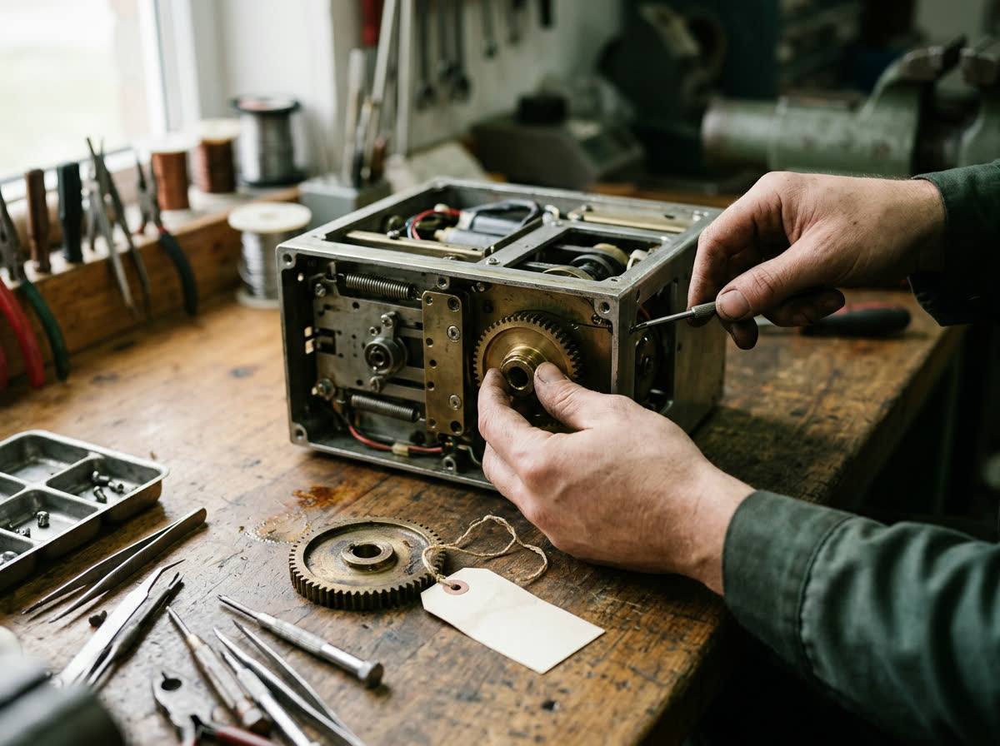
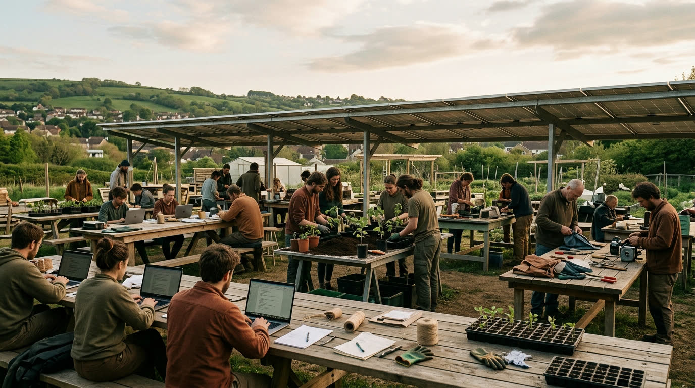

Common AI is working toward a world where useful software is free and open, and stays current because everyone's AI helps look after it. We are early. Nothing here is installable yet.
Common ContributionsOpen source that asked for help
Popular, important open source projects where spare tokens can go. Each listing shows its scope, its budget and who reviews the work.
First listing Our own demo pipeline repository, used for the dry runs. Anyone else appears only after a maintainer opts in.
Open scienceResearch that could use the capacity
Open research projects with work an AI can do and a person can check: data cleaning, replication checks, documentation, tooling. The project's own team proposes it.
None yet No science project is listed.
Propose or sponsorPut a project on the list
Run an open source or open science project? Propose it. Want a project worked on, listed or featured? Sponsor it. Sponsored listings, if we offer them, will always be labelled as sponsored.
Proposals openPropose a project on the public issue tracker. No sign-up, and no payment or sponsored listing exists today.
Who it is for
Software that serves people comes first.
Some open source exists mainly to do public good, and is kept up by very few people. That is where spare capacity matters most. These are the kinds of project we want to serve. We have not contacted any of them, and none is listed. A project appears here only after its maintainers say yes.
Health and public health. Records, clinic tools and disease reporting used where budgets are small.
Crisis response and mapping. Open maps and tools that help people after a disaster.
Learning and access. Offline libraries, open courseware, speech and language data for more of the world's languages.
Food, climate and environment. Open data on what we eat, the air we breathe and the land we farm.
Open science. Research software and data that other work depends on.
Know a project that fits, or maintain one? Propose it on the public tracker. Proposing is not listing, and nothing is sent to a project on your behalf.
The mission · a bet, not a result
Software should be a commons.
Most of the world's software already stands on open source, and AI is making changes to it cheap to write. If those changes can be trusted, free software can be kept current by anyone with spare capacity to give, not only by whoever can pay.
That would move what software costs. Not to nothing, but to what is left: hosting it, looking after it, and fitting it to the way you work.
Illustration generated with AI.
Costs fall
A service costs about what it takes to host, maintain and set up. The licence is no longer the bill.
People are hired to tend it
We expect more people to be paid to look after, customise and implement open source for others.
A fairer baseline
Cheaper essentials make it easier to reach a society with a basic income and shared technology, in the spirit of solarpunk.
These are hopes, not forecasts. Most maintainers are unpaid today, and lower prices do not arrive by themselves. Nothing here pays anyone.
The catalog
Check the catalog before you spend a token.
We want a universal catalog of open software. When someone asks an AI to build something, it looks in the catalog first. If a project already does the job, it uses that, and saves the tokens, the time and one more thing to maintain. If nothing fits, it builds, and offers what it built back.
1You ask"Build me a thing that does X."
2Check the catalogDoes open software already do this?
Yes: use itFree, and already looked after.
No: build itThen offer it back, so the next person finds it.
Fewer wasted tokens. Nobody pays to rebuild what already exists.
Fewer copies to keep alive. More people share the same few projects and keep them current.
A way in for new work. What is missing becomes visible, so it gets built once.
The catalog does not exist yet. It is the part we most want to see built.
How contributions stay safe
Small, capped, and always reviewed by a person.

Illustration generated with AI.
Free software only stays healthy if contributions cost maintainers less than they give. So the first tool we are building does the careful part: it keeps an AI's work small, inside a budget, and in front of a human.
A maintainer says yes first. Only projects that opt in, one issue at a time.
Small and capped. One file per task, and a spend limit you set.
Checked before it leaves. Secrets scanned, approved hosts and branches only, the project's own tests run.
A person decides. Nothing is merged without a maintainer, and a person holds the off switch.
Where we are
Early, and honest about it.
Built
The safety checks, a container that runs model-written code with no network, and a dry run on two small tasks.
Partly built
How a maintainer opts a whole project in with one file, and the step that opens a pull request. Both are tested only against a pretend GitHub; no project uses them.
Not built
An installer. The catalog. A real pull request. A name we have cleared.
What would an acceptable AI contribution look like in your project?

Illustration generated with AI.
That is what we most need to learn, and the reason nothing is installable yet. Tell us on the public issue tracker. There is no sign-up, and nothing gets installed or opened against your project because you answered.